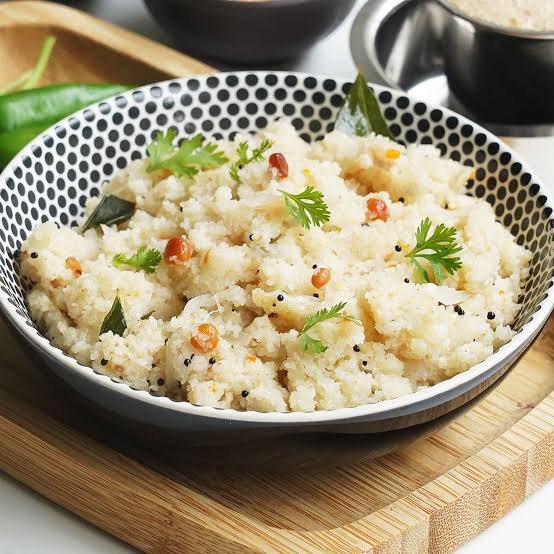

SOUTH INDIAN • BREAKFAST
A simple, warm and delicious South Indian breakfast made with roasted semolina and vegetables.

Roast the semolina until lightly golden. Cook the vegetables separately, add water and bring it to a boil. Slowly add the roasted rava while stirring continuously until the mixture becomes soft and fluffy.
Dry roast the rava on medium heat until it becomes lightly golden. Keep it aside.
Cook the chopped onion, carrot, green chilli and ginger until the vegetables become slightly soft.
Add water and bring the mixture to a boil.
Slowly add the roasted rava while continuously stirring to avoid lumps.
Cook until the water is absorbed and the upma becomes soft and fluffy. Serve hot.
Watch how to prepare delicious vegetable upma.